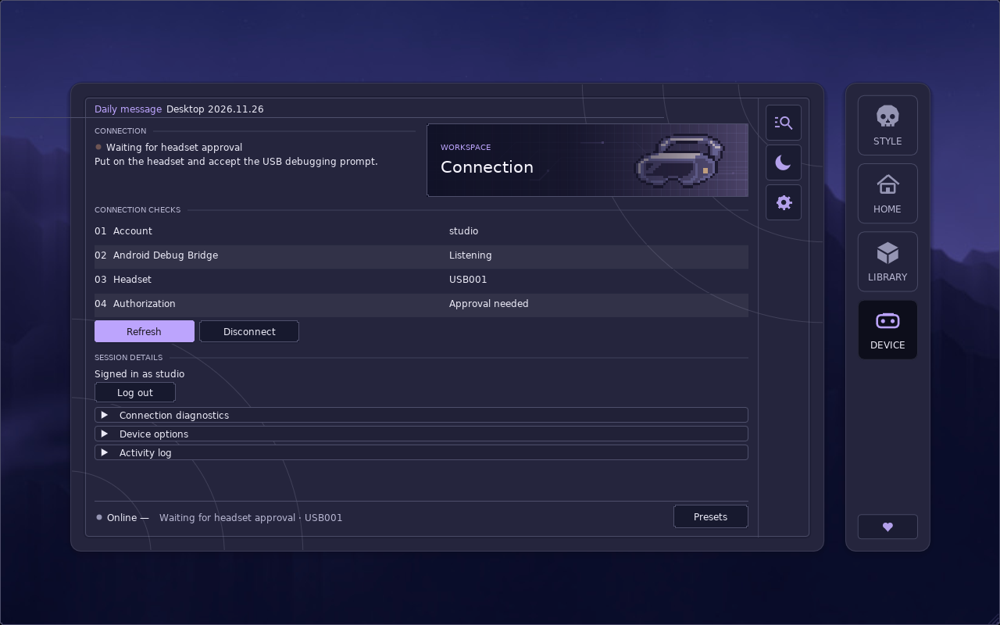

See your headset’s status
Connection lists USB headsets and wireless devices already visible to your computer through Android Debug Bridge (ADB).
- See when a device needs authorization, goes offline or becomes available.
- Choose a headset in Device options. Havoc remembers your selection after a restart.
- Enable automatic reconnect for a dropped link, or retry manually from Connection.
